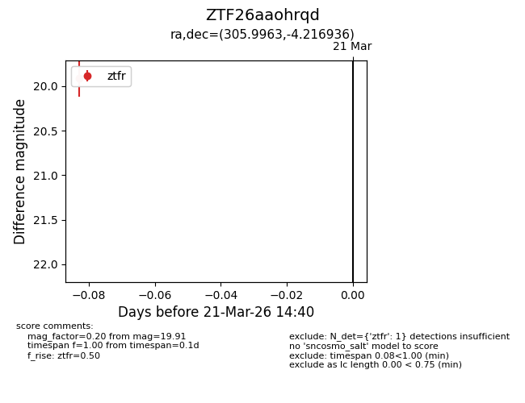
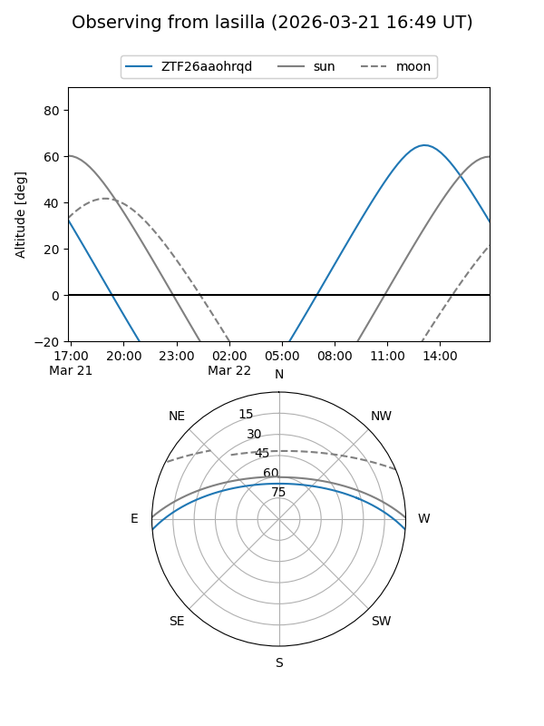
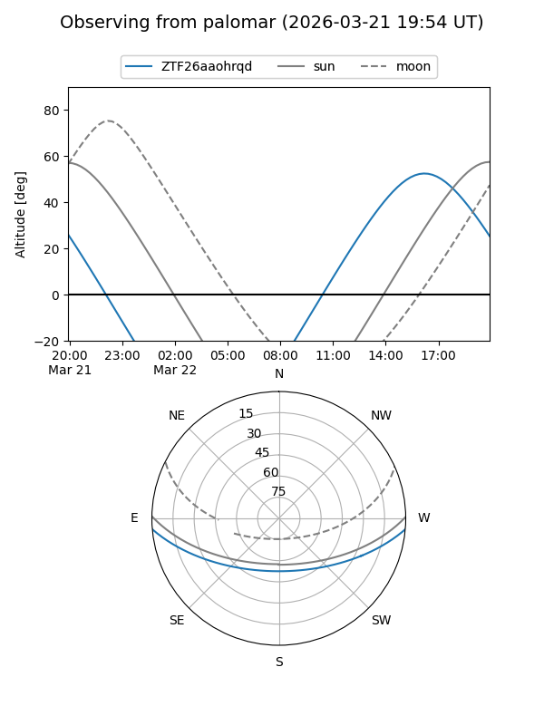
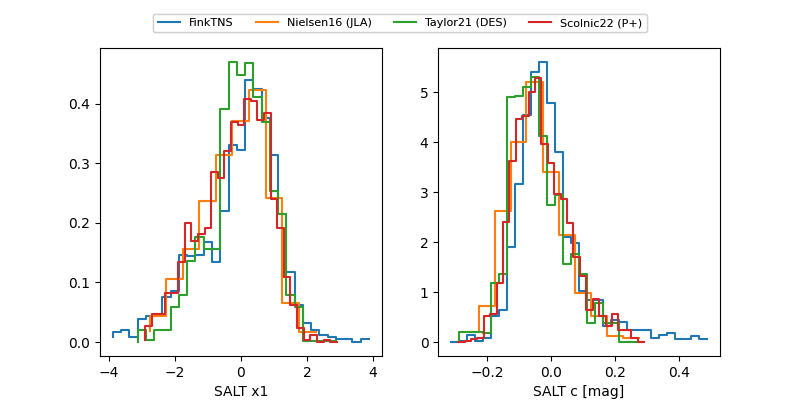

ZTF26aaohrqd
Target ZTF26aaohrqd at 2026-03-21 14:42
Aliases and brokers:
FINK: link
Lasair: link
ALeRCE: link
alt names
ZTF26aaohrqd (ztf,fink_ztf)
Coordinates:
equatorial (ra, dec) = 305.9963,-4.21694
equatorial (HMS+DMS) = 20:23:59.10,-04:13:00.97
galactic (l, b) = (39.9711,-22.47523)
Flags:
Photometry:
last ztfr=19.91
1 ztfr detections
Lightcurve

Visibility


Additional plots
